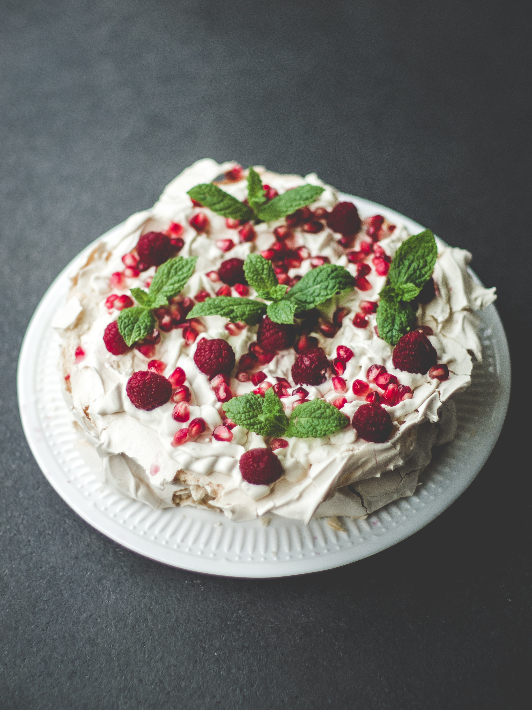

You can't buy happiness but you can buy cake and that's kind of the same thing
What about Pavlova?
The Oxford English Dictionary may have settled a long-running argument between Australia and New Zealand over who invented the pavlova. The dessert - meringue with fruit and cream - was named after the Russian ballerina Anna Pavlova, who visited both countries in the 1920s. Australians and New Zealanders agree on that, but not on who invented it. In its relaunched online edition, the OED says the first recorded pavlova recipe appeared in New Zealand in 1927. This was in a book called Davis Dainty Dishes, published by the Davis Gelatine company, and it was a multi-coloured jelly dish. But New Zealanders claim the meringue version also originated there, with recipes for it appearing in publications in 1928 and 1929. Dr Helen Leach from New Zealand's University of Otago is something of a pavlova expert. "I can find at least 21 pavlova recipes in New Zealand cookbooks by 1940, which was the year the first Australian ones appeared," the author of The Pavlova Story told the Daily Telegraph.
